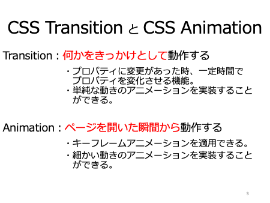

| スライド | 説明 |
|---|---|
| ゼミナール中島 卒業研究課題 Cssアニメーション よろしくお願いします。 |
|
| 今回の内容です。
スライドに示す、5つ 1つ目、cssでアニメーションを作る2つの方法について 2つ目、css アニメーションとは何か？ 3つ目、アニメーションの開始から終了まで、どのように変化させるかを指定するキーフレイムの設定、記述方法。 4つ目、アニメーションの細かい動きを指定するアニメーションプロパティの意味と設定、記述方法。 最後、5つ目、アニメーションを上手に使うためのポイントをお話させていただきます。 |
|
|  | まず、cssでアニメーションを作る2つの方法についてですが、
cssでアニメーションを作る方法は、CSSトランジッションとCSSアニメーションの2つがあります。 トランジッションは、何か、きっかけを与えることで動作するアニメーションで、例えば、ページ上にメニューと書かれている部分にマウスを持っていくと、詳細なメニュー画面が滑り出てくるようなアニメーションを言います。 それに対し、アニメーションは、ページを開いた瞬間から動作するもので、アニメーションの開始から終了まで、どのように変化させるかを指定するキーフレイムを適用し、アニメーションプロパティで細かい動きを設定したアニメーションを実装したものをいいます。 |